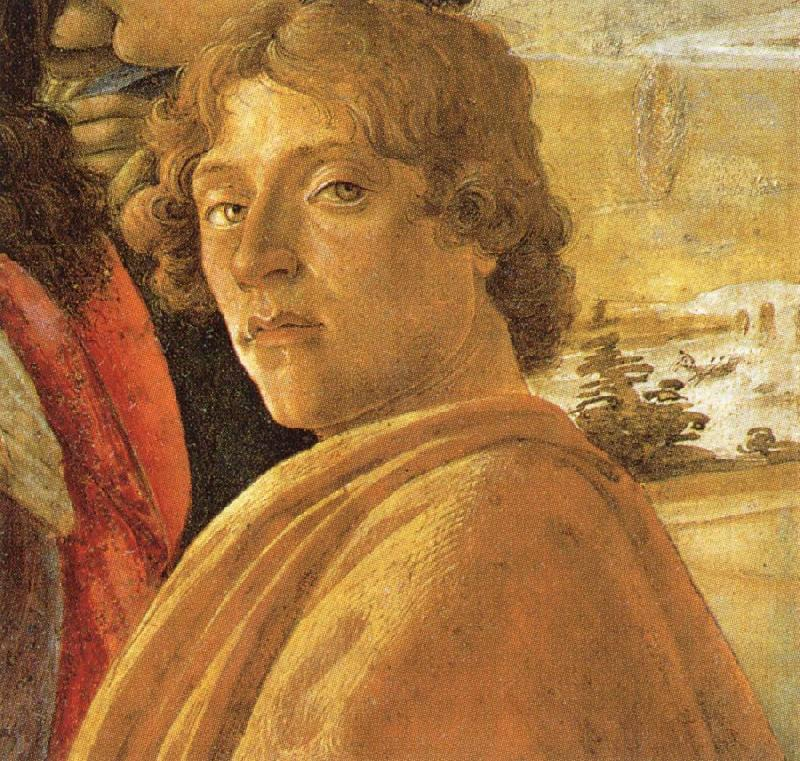
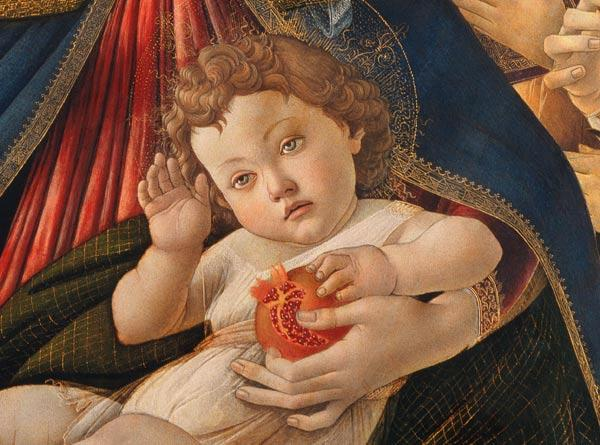
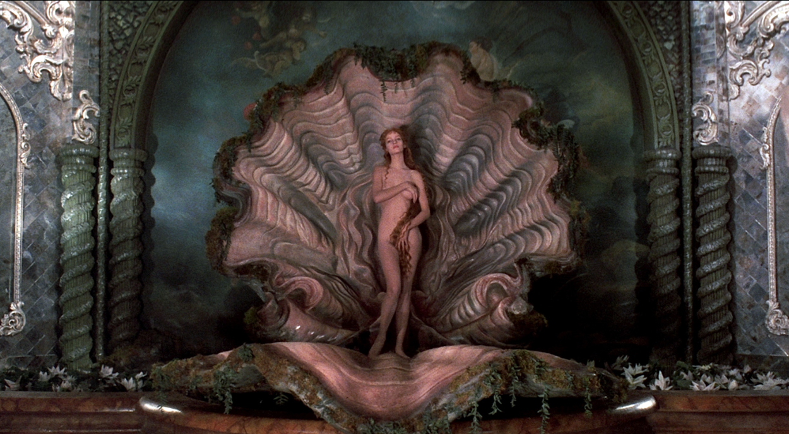

| Sobre Sandro Botticelli | |
|  |
Alessandro di Mariano di Vanni Filipepi conocido como Sandro Botticelli, nació en Florencia Italia en el año 1445 siendo el menor de cuatro hijos.
Creció en una familia humilde de artesanos y más tarde se convirtió en discípulo de Fra Filippo Lippi. Para el año 1470 contaba con un taller propio iniciando con obras de temática religiosa, particularmente con vírgenes. Para el mismo año se introdujo en el círculo de los Médici, familia importante de comerciantes y banqueros de gran influencia sobre la política italiana, para quienes realizo de sus obras más valiosas y de las que gano gran reconocimiento. |
| Estuvo influenciado por el neoplatonismo cristiano y en su estilo buscaba delicadeza y la gracia que representaba en sus madonnas y diosas mitológicas, así como fue estimulado para que pintara los mitos de la antigüedad, alegorías paganas y demás novedosas temáticas sin descuidar su gran dominio de la perspectiva, conocimiento del uso de la luz, la aplicación del color y la obtención de volumetría. |  |
| El Nacimiento de Venus | |
 |
|
| Ficha Técnica | |
|
Título: El nacimiento de Venus
Autor: Sandro Botticelli Cronología: Siglo XV (1484) Estilo: Arte Renacentista Técnica: Temple sobre lienzo Dimensiones: 278,5 cm de ancho por 172,5 cm de alto Ubicación: Galería Uffici, Florencia, Italia |
|
| Contexto Histórico | |
|
Creada a finales del siglo XV, El Nacimiento de Venus fue la obra revolucionaria de su tiempo por su representación sin justificante religiosa, que durante la Edad Media era considerada un hecho pecaminoso. En ella emplea el tema mitológico procedente de la cultura clásica grecorromana interpretación que se vincula con la Academia Platónica Florentina, un círculo intelectual apoyado por la familia Médici que se desarrolló en la filosofía, el arte y la literatura. Botticelli recibió de Lorenzo Pierfrancesco de Médici el encargo de representar la historia del nacimiento de esta diosa pagana basado la obra "La Metamorfosis" de Ovidio, que según la leyenda Saturno igualmente conocido como Cronos dios del tiempo corto los genitales de su padre el dios Urano y los arrojo al mar fecundandolo. De la espuma de mar nació Venus y ésta, empujada por el soplo del viento, fue transportada sobre una concha hacia la isla de Chipre. En la escena, Botticelli, representa la belleza renacentista, la pureza, sabiduría, el paganismo y la cristiandad. En ella se observa a Venus, diosa de la mitología romana también conocida como Afrodita en la mitología griega posando desnuda sobre una concha que la ha traído hasta la orilla del mar, a su vez rodeada por tres figuras de la mitología clásica. Céfiro, el dios del viento junto a Cloris su esposa diosa de las flore. Céfiro sopla sobre Venus y la lleva hasta una costa segura donde la espera una de las tres Horas, la Hora Primavera que porta un vestido estampado con flores, lista para abrigar a Venus con un manto también florido. |
|
| Relevancia Social | |
| Famoso por desafiar las tradiciones y costumbres de su epoca, hoy en día es una de las obras más importantes e icónicas de la historia y la pintura italiana. Ha servido como referencia en obras y representaciones cinematograficas, plasmada en tatuajes y el arte urbano, catalogada como un simbolo de la verdadera belleza, naturalidad, armonía y proporción formandose de un papel que perdurara en la cultura y el arte contemporáneo. |  |
|
Referencias Sandro Botticelli. (2006). Choice (Chicago, Ill.), 43(09), 43-5087-43–5087. https://doi.org/10.5860/choice.43-5087 Moreno, V., Ramírez, M. E., de la Oliva, C., & Moreno y otros, E. (s/f). Sandro Botticelli. Buscabiografias.com. Recuperado el 19 de mayo de 2022, de https://www.buscabiografias.com/biografia/verDetalle/16/Sandro%20Botticelli El nacimiento de Venus. (s/f). Google Arts & Culture. Recuperado el 19 de mayo de 2022, de https://artsandculture.google.com/entity/el-nacimiento-de-venus/m0mjth?hl=es El nacimiento de Venus. (s/f-b). Lacamaradelarte.com. Recuperado el 19 de mayo de 2022, de https://www.lacamaradelarte.com/2016/04/nacimiento-venus-botticelli.html La importancia de “El nacimiento de Venus”, la obra maestra renacentista de Botticelli. (2020, mayo 20). My Modern Met en Español. https://mymodernmet.com/es/botticelli-nacimiento-venus |
|